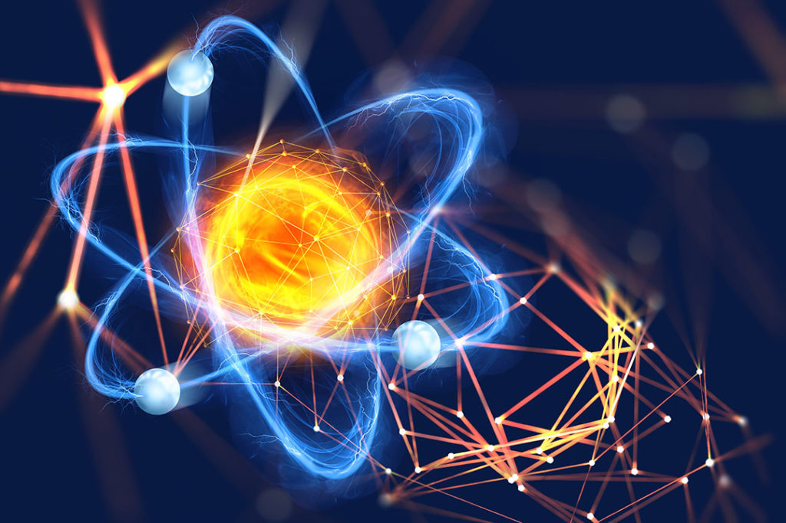

El Átomo
¿Qué es el átomo?
Un átomo es la unidad más pequeña de materia que conserva todas las propiedades químicas de un elemento. La palabra átomo proviene del griego antiguo (átomon, “sin división”) y fue acuñada por los primeros filósofos en teorizar sobre la composición de las cosas, es decir, las partículas elementales del universo.
El átomo puede intervenir en una combinación química a lo largo de la historia, el ser humano, en su afán por comprender el mundo que le rodea, ha lanzado multitud de teoría e hipótesis para explicar su estructura y características. Y es que en ciencia conocer estas diminutas partículas resulta esencial para entender las propiedades de los materiales que componen nuestro mundo.
Por un lado, el núcleo está compuesto a su vez por neutrones, con carga neutra, y protones, con carga positiva. Ambos se encuentran agrupados en el núcleo y forman los nucleones. Y, por otro lado, la corteza se compone por electrones, con carga negativa. Todas estas partículas (electrones, neutrones y protones) forman una estructura atómica y su única diferencia es la relación que tienen unos con otros. Los electrones son las partículas subatómicas más ligeras mientras que los protones pesan 1.836 veces más, al igual que los neutrones. Además, los electrones tienen energía negativa que cuya magnitud se define como carga eléctrica elemental.
.png)
Historia
El primero en formular la idea de la existencia de los átomos fue el filósofo griego Demócrito (s. V-VI a.C.) a partir de especulaciones puramente imaginarias (tal como se entendía la ciencia en aquel entonces). Sus estudios fueron tomados por filósofos posteriores como Leucipo y Epicuro, pero fue obviado durante el medioevo, opacado por la explicación creacionista del mundo, que atribuía todo a Dios. Hubo que esperar hasta 1773 cuando el químico francés Antoine de Lavoisier postuló su teoría sobre la no creación ni destrucción de la materia (sólo se transforma) o Ley de la conservación de la masa, lo cual permitió a John Dalton formular en 1804 la primera teoría atómica moderna.

Luego en 1811 Amedeo Avogadro, físico italiano, postuló que a una temperatura, presión y volumen dados, un gas contiene siempre el mismo número de partículas, sean átomos o moléculas, independientemente de la naturaleza del gas, haciendo al mismo tiempo la hipótesis de que los gases son moléculas poliatómicas con lo que se comenzó a distinguir entre átomos y moléculas. El químico ruso Dmítri Ivánovich Mendeléyev creó en 1869 una clasificación de los elementos químicos en orden creciente de su masa atómica, remarcando que existía una periodicidad en las propiedades químicas.
Este trabajo fue el precursor de la tabla periódica de los elementos como la conocemos actualmente. La visión moderna de su estructura interna tuvo que esperar hasta el experimento de Rutherford en 1911 y el modelo atómico de Bohr. Posteriores descubrimientos científicos, como la teoría cuántica, y avances tecnológicos, como el microscopio electrónico, han permitido conocer con mayor detalle las propiedades físicas y químicas de los átomos.
Características del átomo
En química, los átomos son las unidades básicas y suelen conservar sus propiedades originales en cada reacción. Ni se destruyen ni se crean nuevas tan sólo se organizan de forma diferente creando distintos enlaces entre unos y otros. Los átomos se agrupan dando lugar a moléculas y otro tipo de materiales. Los enlaces que se crean en las reacciones químicas tienen una determinada composición que hace que se diferencien los diferentes elementos químicos. Estos elementos son los que aparecen en la tabla periódica.